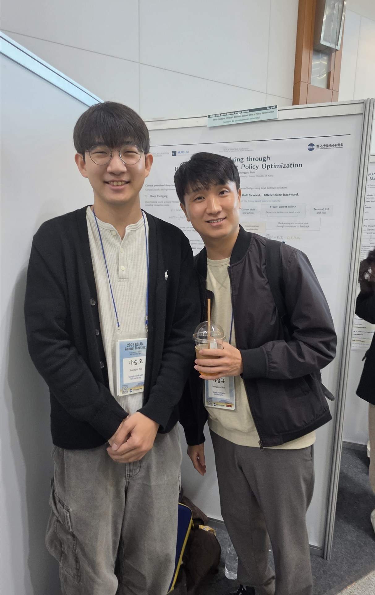
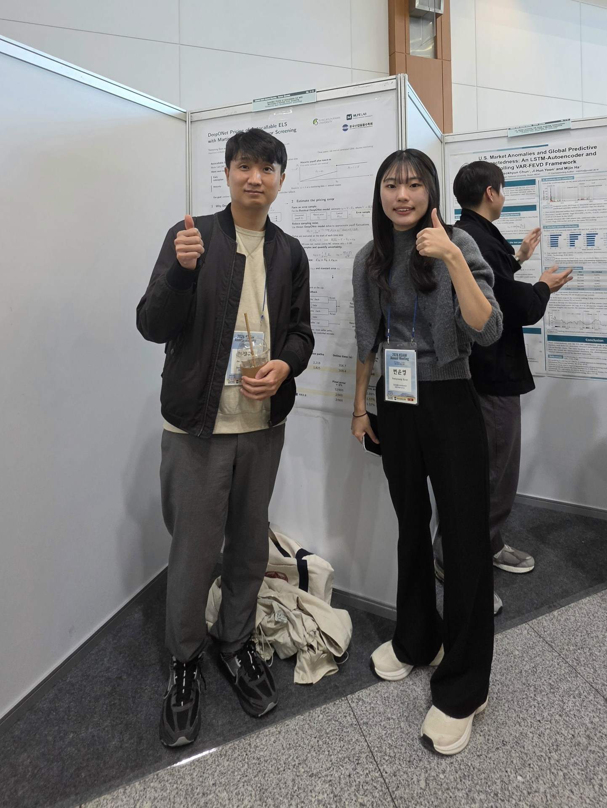

MLFE Lab participated in the 2026 Korean Society for Industrial and Applied Mathematics (KSIAM) Annual Meeting, held at Jeju Convention Center from November 5 to 8. Seungho Na, Yoonyoung Byun, Hojin Ko, and Dongwan Shin presented their research in the poster sessions.
Hojin Ko presented “Knowing When Not to Act: Latent No-Action Region Recovery Hidden in Neural Control,” and Dongwan Shin presented “Discounted Alpha: A Machine Learning Framework for Equity Valuation.”

Seungho Na — Deep Hedging through Bellman-Guided Direct Policy Optimization.

Yoonyoung Byun — DeepONet Pricing of Autocallable ELS with Martingale-Controlled Error Screening.